# First, we define the dir that has the custom library:
dyn.load("/fs/ess/PAS0471/jelmer/software/GLPK/lib/libglpk.so.40", local = FALSE)
custom_library <- "/fs/ess/PAS0471/jelmer/R/rnaseq"
.libPaths(custom_library)
# Then, we load all needed R packages from that library:
library(tidyverse) # Misc. data manipulation and plotting
library(pheatmap) # Heatmap plot
library(EnhancedVolcano) # Volcano plot
library(DESeq2) # Differential expression analysisGene count table analysis
Exploratory and differential expression analysis
After running steps like read pre-processing, alignment, and quantification using the nf-core rnaseq workflow, or another method, you will have a gene count table. In this tutorial, with that gene count table, you will:
- Create an R object that also incorporates the metadata
- Perform exploratory data analysis including a PCA
- Run a Differential Expression (DE) analysis
- Extract and visualize the DE results
1 Getting set up
1.1 Start an RStudio session at OSC
- Log in to OSC at https://ondemand.osc.edu
- Click on
Interactive Apps(top bar) and thenRStudio Server(all the way at the bottom) - Fill out the form as follows:
- Cluster:
Pitzer - R version:
4.3.0 - Project:
PAS2658 - Number of hours:
3 - Node type:
any - Number of cores:
2
- Cluster:
- Click the big blue
Launchbutton at the bottom. - Now, you should be sent to a new page with a box at the top for your RStudio Server “job”, which should initially be “Queued” (waiting to start).
Click to see a screenshot
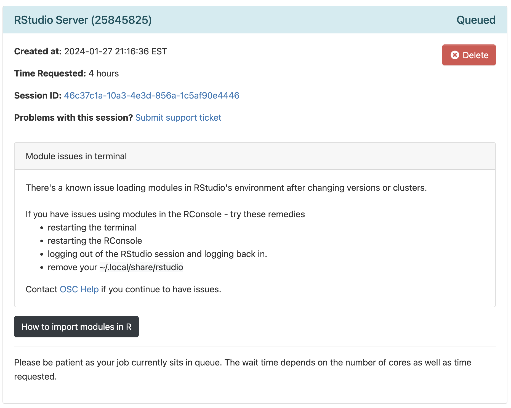- Your job should start running very soon, with the top bar of the box turning green and saying “Running”.
- Click
Connect to RStudio Serverat the bottom of the box, and an RStudio Server instance will open in a new browser tab. You’re ready to go!
Optional: change two RStudio settings (Click to expand)
First, prevent R from saving your “Workspace”:
- Click
Tools(top bar, below your browser’s address bar) >Global Options - In the pop-up window (stay on the
Generaltab), change the settings under the “Workspace” heading to:

Why are we doing this? In short, the default behavior of saving and restoring your “Workspace”, which are all the items (objects) that you create during an R session, is bad practice. Instead, you should recreate your environment from a script and/or saved files with individual pieces of data, as we’ll do today.
Second, “update” your pipe symbol from %>% 1 to |> 2:
- Again click
Tools>Global Options(you may still be there) - Now go to
Codetab in the side panel on the left, and check the box forUse native pipe operator, |> (requires R 4.1+) - Click
OKat the bottom of the pop-up window
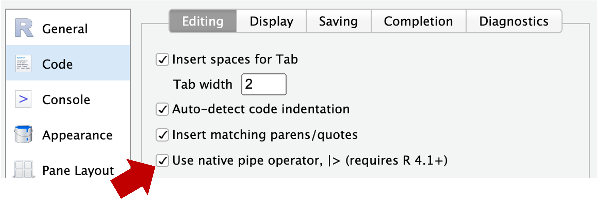
1.2 Create a new RStudio Project
Using an “RStudio Project” will most of all help to make sure your working directory in R is correct. To create a new RStudio Project inside your personal dir in /fs/scratch/PAS2658/<your-name>/Lab9:
- Click
File(top bar, below your browser’s address bar) >New Project - In the popup window, click
Existing Directory.
Click to see a screenshot

- Click
Browse...to select your personal dir.
Click to see a screenshot

- In the next window, you should be in your Home directory (abbreviated as
~), from which you can’t click your way to/fs/scratch! Instead, you’ll first have to click on the (very small!)...highlighted in the screenshot below:

- Type at least part of the path to your dir in
/fs/scratch/PAS2658, e.g. as shown below, and clickOK:
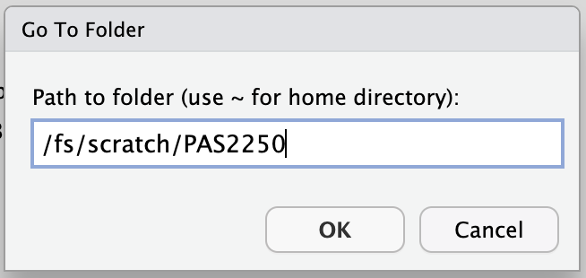
- Now you should be able to browse/click the rest of the way to your
Lab9dir. - Click
Chooseto pick your selected directory. - Click
Create Project.
1.3 Create an R script
We’re going to write all our code in an R script instead of typing it in the console. This helps us to keep track of what we’ve been doing, and enables us to re-run our code after modifying input data or one of the lines of code.
Create and open a new R script by clicking File (top menu bar) > New File > R Script. Save this new script right away by clicking File > Save As, and save it with a name like scripts/DE.R (inside the Lab9 dir which should be automatically selected).
Make sure to type all the R code below inside your script, and then send it to the console from there.
You can send code to the console by pressing Ctrl + Enter on Windows, or Cmd + Return on a Mac.
1.4 Load the necessary packages
In R, we need to install and then use “packages” (basically, add-ons) to perform specialized tasks like differential expression analysis3. Installing packages is quite straightforward in principle, but in RStudio Server at OSC, there can be some hiccups.
I have therefore created a “library” (a directory with a collection of packages) for you — you can load the packages from that library, without needing to install them yourself. Copy the code below into your R script and then send it to the R console:
This will produce output in the R console (a lot when loading DESeq2), and some of it in orange, but all should be good unless you see explicit errors at the bottom (Click to see expected output)
library(tidyverse)── Attaching core tidyverse packages ──────────────────────── tidyverse 2.0.0 ──
✔ dplyr 1.1.4 ✔ readr 2.1.5
✔ forcats 1.0.0 ✔ stringr 1.5.1
✔ ggplot2 3.5.2 ✔ tibble 3.2.1
✔ lubridate 1.9.4 ✔ tidyr 1.3.1
✔ purrr 1.0.4
── Conflicts ────────────────────────────────────────── tidyverse_conflicts() ──
✖ dplyr::filter() masks stats::filter()
✖ dplyr::lag() masks stats::lag()
ℹ Use the conflicted package (<http://conflicted.r-lib.org/>) to force all conflicts to become errorslibrary(pheatmap)library(EnhancedVolcano)Loading required package: ggrepellibrary(DESeq2)Loading required package: S4VectorsLoading required package: stats4Loading required package: BiocGenerics
Attaching package: 'BiocGenerics'The following objects are masked from 'package:lubridate':
intersect, setdiff, unionThe following objects are masked from 'package:dplyr':
combine, intersect, setdiff, unionThe following objects are masked from 'package:stats':
IQR, mad, sd, var, xtabsThe following objects are masked from 'package:base':
anyDuplicated, aperm, append, as.data.frame, basename, cbind,
colnames, dirname, do.call, duplicated, eval, evalq, Filter, Find,
get, grep, grepl, intersect, is.unsorted, lapply, Map, mapply,
match, mget, order, paste, pmax, pmax.int, pmin, pmin.int,
Position, rank, rbind, Reduce, rownames, sapply, setdiff, table,
tapply, union, unique, unsplit, which.max, which.min
Attaching package: 'S4Vectors'The following objects are masked from 'package:lubridate':
second, second<-The following objects are masked from 'package:dplyr':
first, renameThe following object is masked from 'package:tidyr':
expandThe following object is masked from 'package:utils':
findMatchesThe following objects are masked from 'package:base':
expand.grid, I, unnameLoading required package: IRanges
Attaching package: 'IRanges'The following object is masked from 'package:lubridate':
%within%The following objects are masked from 'package:dplyr':
collapse, desc, sliceThe following object is masked from 'package:purrr':
reduceLoading required package: GenomicRangesLoading required package: GenomeInfoDbLoading required package: SummarizedExperimentLoading required package: MatrixGenericsLoading required package: matrixStats
Attaching package: 'matrixStats'The following object is masked from 'package:dplyr':
count
Attaching package: 'MatrixGenerics'The following objects are masked from 'package:matrixStats':
colAlls, colAnyNAs, colAnys, colAvgsPerRowSet, colCollapse,
colCounts, colCummaxs, colCummins, colCumprods, colCumsums,
colDiffs, colIQRDiffs, colIQRs, colLogSumExps, colMadDiffs,
colMads, colMaxs, colMeans2, colMedians, colMins, colOrderStats,
colProds, colQuantiles, colRanges, colRanks, colSdDiffs, colSds,
colSums2, colTabulates, colVarDiffs, colVars, colWeightedMads,
colWeightedMeans, colWeightedMedians, colWeightedSds,
colWeightedVars, rowAlls, rowAnyNAs, rowAnys, rowAvgsPerColSet,
rowCollapse, rowCounts, rowCummaxs, rowCummins, rowCumprods,
rowCumsums, rowDiffs, rowIQRDiffs, rowIQRs, rowLogSumExps,
rowMadDiffs, rowMads, rowMaxs, rowMeans2, rowMedians, rowMins,
rowOrderStats, rowProds, rowQuantiles, rowRanges, rowRanks,
rowSdDiffs, rowSds, rowSums2, rowTabulates, rowVarDiffs, rowVars,
rowWeightedMads, rowWeightedMeans, rowWeightedMedians,
rowWeightedSds, rowWeightedVarsLoading required package: BiobaseWelcome to Bioconductor
Vignettes contain introductory material; view with
'browseVignettes()'. To cite Bioconductor, see
'citation("Biobase")', and for packages 'citation("pkgname")'.
Attaching package: 'Biobase'The following object is masked from 'package:MatrixGenerics':
rowMediansThe following objects are masked from 'package:matrixStats':
anyMissing, rowMedians1.5 Define our input files
For the differential expression analysis, we have the following input files:
- Metadata table — Metadata for the study, linking sample IDs to treatments
- Gene count table — Produced by the nf-core rnaseq workflow
# NOTE: here I am providing the path to my gene count table,
# but if you ran the workflow to completion, you can use your own.
# We'll save the paths to our input files for later use
count_table_file <- "/fs/scratch/PAS2658/jelmer/share/results/salmon.merged.gene_counts_length_scaled.tsv"
metadata_file <- "data/meta/metadata.tsv"2 Create a DESeq2 object
Like in the Culex paper whose data we are working with, we will perform a Principal Component Analysis (PCA) and a Differential Expression (DE) analysis using the popular DESeq2 package (paper, website).
The DESeq2 package has its own “object type” (a specific R format type) and before we can do anything else, we need to create a DESeq2 object from three components:
- Metadata
Our independent variables should be in the metadata, allowing DESeq2 to compare groups of samples. - Count table
A matrix (table) with one row per gene, and one column per sample. - A statistical design
A statistical design formula (basically, which groups to compare) will tell DESEq2 how to analyze the data
2.1 Metadata
First, we’ll load the metadata file and take a look at the resulting data frame:
# Read in the count table
meta_raw <- read_tsv(metadata_file, show_col_types = FALSE)# Take a look at the first 6 rows
head(meta_raw)# A tibble: 6 × 3
sample_id time treatment
<chr> <chr> <chr>
1 ERR10802882 10dpi cathemerium
2 ERR10802875 10dpi cathemerium
3 ERR10802879 10dpi cathemerium
4 ERR10802883 10dpi cathemerium
5 ERR10802878 10dpi control
6 ERR10802884 10dpi control We’ll make sure the data frame is sorted by sample ID, and that the sample IDs are contained in “row names”:
# Prepare the metadata so it can be loaded into DESeq2
meta <- meta_raw |>
# 1. Sort by the 'sample_id' column
arrange(sample_id) |>
# 2. Turn the 'sample_id' column into row names:
column_to_rownames("sample_id") |>
# 3. Turn the 'time' and 'treatment' columns into "factors":
mutate(time = factor(time, levels = c("24hpi", "10dpi")),
treatment = factor(treatment, levels = c("control", "cathemerium", "relictum")))# Take a look at the first 6 rows
head(meta) time treatment
ERR10802863 24hpi control
ERR10802864 24hpi cathemerium
ERR10802865 24hpi relictum
ERR10802866 24hpi control
ERR10802867 24hpi cathemerium
ERR10802868 24hpi relictum
Factors are a common R data type for categorical variables (Click to expand)
We changed the two independent variable columns (time and treatment) into factors, because DESEq2 wants this — this also allowed us to use a custom, non-alphanumeric ordering where 24hpi comes before 10dpi:
head(meta$time)[1] 24hpi 24hpi 24hpi 24hpi 24hpi 24hpi
Levels: 24hpi 10dpi2.2 Gene count table
Second, load the gene count table into R:
# Read in the count table
count_df <- read_tsv(count_table_file, show_col_types = FALSE)# Take a look at the first 6 rows
head(count_df)# A tibble: 6 × 24
gene_id gene_name ERR10802863 ERR10802864 ERR10802865 ERR10802866 ERR10802867
<chr> <chr> <dbl> <dbl> <dbl> <dbl> <dbl>
1 ATP6 ATP6 10275. 8255. 4103. 18615. 11625.
2 ATP8 ATP8 3.85 2.92 2.33 7.76 7.01
3 COX1 COX1 88041. 83394. 36975. 136054. 130863.
4 COX2 COX2 8749. 7925. 2901. 16802. 10026.
5 COX3 COX3 55772. 50312. 35074. 80510. 69850.
6 CYTB CYTB 38543. 36352. 22185. 62147. 57461.
# ℹ 17 more variables: ERR10802868 <dbl>, ERR10802869 <dbl>, ERR10802870 <dbl>,
# ERR10802871 <dbl>, ERR10802874 <dbl>, ERR10802875 <dbl>, ERR10802876 <dbl>,
# ERR10802877 <dbl>, ERR10802878 <dbl>, ERR10802879 <dbl>, ERR10802880 <dbl>,
# ERR10802881 <dbl>, ERR10802882 <dbl>, ERR10802883 <dbl>, ERR10802884 <dbl>,
# ERR10802885 <dbl>, ERR10802886 <dbl>Again, we have to make several modifications before we can include it in the DESeq2 object. DESeq2 expects with whole numbers (integers) and with gene IDs as row names:
# Prepare the count table so it can be loaded into DESeq2
count_mat <- count_df |>
# 1. Turn the 'gene_id' column into row names:
column_to_rownames("gene_id") |>
# 2. Remove a remaining non-numeric column (which has gene names):
select(-gene_name) |>
# 3. Round everything to whole numbers:
round() |>
# 4. Convert it to a formal 'matrix' format:
as.matrix()# Take a look at the first 6 rows
head(count_mat) ERR10802863 ERR10802864 ERR10802865 ERR10802866 ERR10802867 ERR10802868
ATP6 10275 8255 4103 18615 11625 7967
ATP8 4 3 2 8 7 2
COX1 88041 83394 36975 136054 130863 62279
COX2 8749 7925 2901 16802 10026 6701
COX3 55772 50312 35074 80510 69850 42478
CYTB 38543 36352 22185 62147 57461 28159
ERR10802869 ERR10802870 ERR10802871 ERR10802874 ERR10802875 ERR10802876
ATP6 12788 4408 13648 13834 1346 10032
ATP8 2 0 2 1 3 2
COX1 109596 106402 104394 77682 38276 78290
COX2 11494 6603 11151 9893 1473 13146
COX3 68228 71945 66900 52368 14665 37275
CYTB 46219 52035 46090 35247 17449 38762
ERR10802877 ERR10802878 ERR10802879 ERR10802880 ERR10802881 ERR10802882
ATP6 987 1834 3337 5036 1983 11586
ATP8 0 0 0 3 0 27
COX1 17785 32099 64490 63960 50965 76113
COX2 1141 1907 3439 8334 2063 12752
COX3 8797 15948 26278 29997 17802 35419
CYTB 11177 22262 34368 33401 25854 43912
ERR10802883 ERR10802884 ERR10802885 ERR10802886
ATP6 18821 2792 11749 6682
ATP8 40 0 8 1
COX1 108343 65829 107741 94682
COX2 19148 2713 17947 10656
COX3 51441 24915 50029 47750
CYTB 57844 34616 50587 51198Check that the sample IDs match
When creating the DESeq2 object, DESeq2 assumes that sample IDs in both tables match and are provided in the same order. Let’s make sure this is indeed the case:
# Check that sample IDs in the metadata and the count table match
all(row.names(meta) == colnames(count_mat))[1] TRUE2.3 Create the DESeq2 object
We will create the DESeq2 object using the function DESeqDataSetFromMatrix(), which we will provide with three arguments corresponding to the components discussed above:
- The metadata with argument
colData. - The count data with argument
countData. - The statistical design for the DE analysis with argument
design. For now, we will specify~1, which effectively means “no design” — we will change this before the actual DE analysis.
# Create the DESeq2 object
# (`dds` is a name commonly used for DESeq2 objects, short for "DESeq Data Set")
dds <- DESeqDataSetFromMatrix(
colData = meta,
countData = count_mat,
design = ~ 1
)converting counts to integer modeBefore we will run the differential expression analysis, though, we will do a bit of exploratory data analysis using our dds object.
3 Exploratory Data Analysis
3.1 Our count matrix
What are the number of rows (=number of genes) and columns (=number of samples) of our count matrix?
dim(count_mat)[1] 18855 22How many genes have total (= across all samples) counts that are non-zero?
nrow(count_mat[rowSums(count_mat) > 0, ])[1] 17788Exercise: gene counts
- How many genes have total counts of at least 10?
Click to see the solution
nrow(count_mat[rowSums(count_mat) >= 10, ])[1] 16682- Bonus: How many genes have mean counts of at least 10?
Click to see the solution
# Now we need to divide by the number of samples, which is the number of columns,
# which we can get with 'ncol'
nrow(count_mat[rowSums(count_mat) / ncol(count_mat) >= 10, ])[1] 12529How do the “library sizes”, i.e. the summed per-sample gene counts, compare across samples?
colSums(count_mat)ERR10802863 ERR10802864 ERR10802865 ERR10802866 ERR10802867 ERR10802868
24297245 17177436 22745445 26849403 21471477 17506262
ERR10802869 ERR10802870 ERR10802871 ERR10802874 ERR10802875 ERR10802876
24299398 25490128 26534405 22194841 18927885 28804150
ERR10802877 ERR10802878 ERR10802879 ERR10802880 ERR10802881 ERR10802882
9498249 14807513 20667093 23107463 17545375 19088206
ERR10802883 ERR10802884 ERR10802885 ERR10802886
21418234 19420046 24367372 25452228 Bonus exercise: nicer counts
That’s not so easy to read / interpret. Can you instead get these numbers in millions, rounded to whole numbers, and sorted from low to high?
Click to see the solution
sort(round(colSums(count_mat) / 1000000))ERR10802877 ERR10802878 ERR10802864 ERR10802868 ERR10802881 ERR10802875
9 15 17 18 18 19
ERR10802882 ERR10802884 ERR10802867 ERR10802879 ERR10802883 ERR10802874
19 19 21 21 21 22
ERR10802865 ERR10802880 ERR10802863 ERR10802869 ERR10802885 ERR10802870
23 23 24 24 24 25
ERR10802886 ERR10802866 ERR10802871 ERR10802876
25 27 27 29 3.2 Principal Component Analysis (PCA)
We will run a PCA to examine overall patterns of (dis)similarity among samples, helping us answer questions like:
- Do the samples cluster by treatment (infection status) and/or time point?
- Which of these two variables has a greater effect on overall patterns of gene expression?
- Is there an overall interaction between these two variables?
First, normalize the count data to account for differences in library size among samples and “stabilize” the variance among genes4:
dds_vst <- varianceStabilizingTransformation(dds)
The authors of the study did this as well:
We carried out a Variance Stabilizing Transformation (VST) of the counts to represent the samples on a PCA plot.
Next, run and plot the PCA with a single function call, plotPCA from DESeq2:
# With 'intgroup' we specify the variables (columns) to color samples by
plotPCA(dds_vst, intgroup = c("time", "treatment"))using ntop=500 top features by variance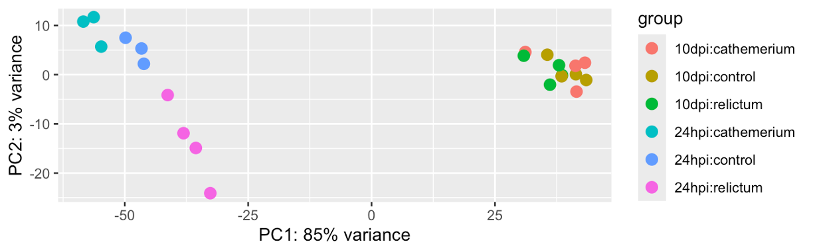
Exercise: PCA
Based on your PCA plot, try to answer the three questions asked at the beginning of this PCA section.
How does our plot compare to the PCA plot in the paper (Figure 1), in terms of the conclusions you just drew in the previous exercise.
Click to see the paper’s Figure 1
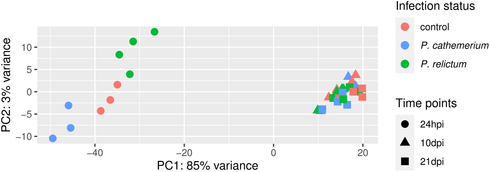
Bonus: Compare the PCA plot with different numbers of included genes (Hint: figure out how to do so by looking at the help by running
?plotPCA).Bonus: Customize the PCA plot — e.g. can you “separate” treatment and time point (different shapes for one variable, and different colors for the other), like in Fig. 1 of the paper?
Click to see some hints for PCA plot customization
To expand on the point of the exercise: in the plot we made above, each combination of time point and treatment has a distinct color — it would be better to use point color only to distinguish one of the variables, and point shape to distinguish the other variable (as was also done in the paper’s Fig. 1).
To be able to customize the plot properly, we best build it from scratch ourselves, rather than using the plotPCA function. But then how do we get the input data in the right shape?
A nice trick is that we can use returnData = TRUE in the plotPCA function, to get plot-ready formatted data instead of an actual plot:
pca_df <- plotPCA(dds_vst, ntop = 500,
intgroup = c("time", "treatment"), returnData = TRUE)using ntop=500 top features by varianceWith that pca_df dataframe in hand, it will be relatively straightforward to customize the plot, if you know some ggplot2.
Click to see a possible solution
First, we’ll get the data in the right format, as explained in the hint:
pca_df <- plotPCA(dds_vst, ntop = 500,
intgroup = c("time", "treatment"), returnData = TRUE)using ntop=500 top features by varianceSecond, we’ll extract and store the percentage of variance explained by different principal components, so we can later add this information to the plot:
pct_var <- round(100 * attr(pca_df, "percentVar"), 1)
pct_var[1] 85.3 3.1Now we can make the plot:
ggplot(pca_df,
aes(x = PC1, y = PC2, color = treatment, shape = time)) +
geom_point(size = 5) +
labs(x = paste0("PC1 (", pct_var[1], "%)"),
y = paste0("PC2 (", pct_var[2], "%)")) +
scale_color_brewer(palette = "Dark2", name = "Infection status") +
scale_shape(name = "Time points") +
theme_bw() +
theme(panel.grid.minor = element_blank())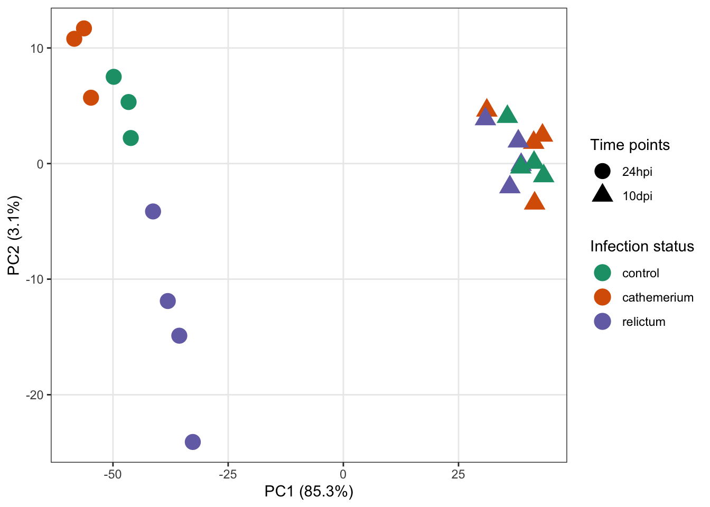
4 Differential Expression (DE) analysis
4.1 Figuring out how to do the analysis
First, let’s see how the DE analysis was done in the paper:
Then, we used the DESeq2 package (Love et al., 2014) to perform the differential gene expression analysis comparing: (i) P. relictum-infected mosquitoes vs. controls, (ii) P. cathemerium-infected mosquitoes vs. controls, and (iii) P. relictum-infected mosquitoes vs. P. cathemerium-infected mosquitoes.
This is not terribly detailed and could be interpreted in a couple of different ways. For example, they may have compared infection statuses by ignoring time points or by controlling for time points (and there are different ways to do the latter).
Ignoring time would mean analyzing the full dataset (all time points) while only using the infection status as an independent variable, i.e. the design ~treatment.
Given the PCA results, do you think that ignoring the time variable is a good idea? (Click for the answer)
No: the time variable clearly has a large effect on overall patterns of gene expression, in fact more so than the treatment..
Controlling for time can be done in two ways:
- A two-factor analysis:
~ time + treatment. - Pairwise comparisons between each combination of time and treatment (we’ll see below how we can do that).
If we take a look at Table 1 with the DE results, it will become clearer how they did their analysis:
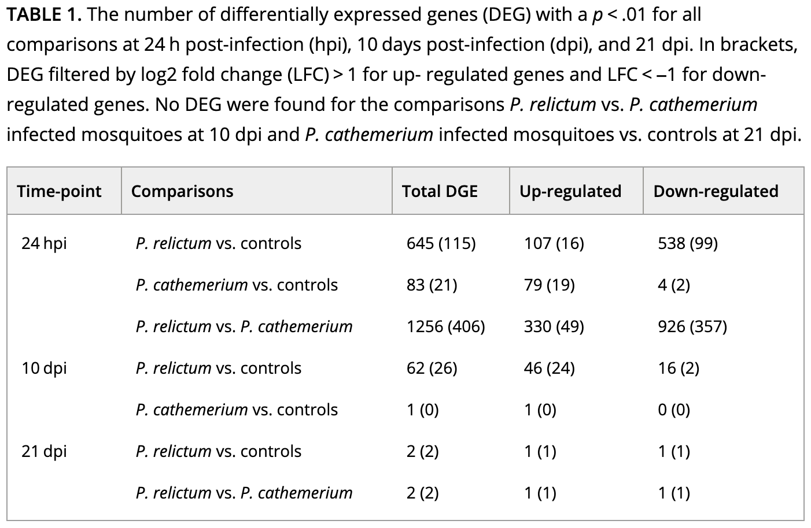
How do you interpret this: did they run pairwise comparisons or a two-factor model? (Click for the answer)
It looks like they performed pairwise comparisons between each combination of time and treatment.That brings us a step closer, but pairwise comparisons with >1 independent variable can (also!) be done in two ways:
- After subsetting the dataset to each combination of time and treatment.
- After creating a single, combined independent variable that is a combination of time and treatment.
The latter method is the more common one, and is what we will do below5.
4.2 Setting the statistical design
We will now create a new variable that is a combination of treatment and time, and call it group:
# Create a combined variable called 'group':
dds$group <- factor(paste(dds$treatment, dds$time, sep = "_"))# Which unique values does 'group' have, and how many samples are in each?
table(dds$group)
cathemerium_10dpi cathemerium_24hpi control_10dpi control_24hpi
4 3 4 3
relictum_10dpi relictum_24hpi
4 4 Next, we set the analysis design:
# Set the statistical design (Note: the symbol before 'group' is a tilde, ~ )
design(dds) <- ~ groupNow we’re ready to run the DE analysis!
4.3 Running the DE analysis
While we had to do a lot of prep to get to this stage, actually running the DE analysis is very simple:
# Run the DE analysis
# (We are assigning the output back to the same `dds` object - the DE results are added to it)
dds <- DESeq(dds)estimating size factorsestimating dispersionsgene-wise dispersion estimatesmean-dispersion relationshipfinal dispersion estimatesfitting model and testingThe DESeq() function is a wrapper that performs three steps (functions) consecutively:
estimateSizeFactors()— “Normalization” by library size and composition.estimateDispersions()— Estimate gene-wise dispersion (variance in counts).nbinomWaldTest(ddsObj)— Fit the negative binomial GLM and calculate test statistics
A key thing to understand is that above, DESeq2 automatically performed pairwise comparisons between each of the (6) levels of the group variable. This means that for any individual gene, it tested whether the gene is differentially expressed separately for each of these pairwise comparisons.
5 Extracting the DE results
DESeq2 stores the results as a separate table for each pairwise comparison, and now, we’ll extract one of these.
5.1 The results table
We can extract the results for one pairwise comparison (which DESeq2 refers to as a contrast) at a time, by specifying it with the contrast argument as a vector of length 3:
- The focal independent variable (here,
group) - The first (reference) level of the independent variable (in the example below,
relictum_24hpi) - The second level of the independent variable (in the example below,
control_24hpi)
# Extract the DE results for one pairwise comparison
focal_contrast <- c("group", "relictum_24hpi", "control_24hpi")
res_rc24 <- results(dds, contrast = focal_contrast)
head(res_rc24)log2 fold change (MLE): group relictum_24hpi vs control_24hpi
Wald test p-value: group relictum_24hpi vs control_24hpi
DataFrame with 6 rows and 6 columns
baseMean log2FoldChange lfcSE stat pvalue padj
<numeric> <numeric> <numeric> <numeric> <numeric> <numeric>
ATP6 7658.0445 -0.416305 0.609133 -0.683438 0.4943300 0.776172
ATP8 4.9196 -1.311116 1.388811 -0.944057 0.3451406 NA
COX1 75166.8670 -0.590935 0.282075 -2.094958 0.0361747 0.208045
COX2 7807.1848 -0.610152 0.578401 -1.054893 0.2914743 0.615249
COX3 41037.7359 -0.400173 0.251760 -1.589498 0.1119479 0.388880
CYTB 36916.6130 -0.501653 0.261927 -1.915242 0.0554617 0.266528What do the columns in this table contain?
baseMean: Mean expression level across all samples.log2FoldChange: The “log2-fold change” of gene counts between the compared levels.lfcSE: The uncertainty in terms of the standard error (SE) of the log2-fold change estimate.stat: The value for the Wald test’s test statistic.pvalue: The uncorrected p-value from the Wald test.padj: The multiple-testing corrected p-value (i.e., adjusted p-value).
Multiple testing correction
Because we are testing significance for many genes, we need to correct for multiple testing. DESeq2 uses the Benjamini-Hochberg False Discovery Rate (FDR) correction. For more info, see this StatQuest video.
Log2-fold changes (LFCs)
In RNA-seq, log2-fold changes (LFCs) are the standard way of representing the magnitude (effect size) of expression level differences between two groups of interest. With A and B being the compared sample groups, the LFC is calculated as:
log2(mean of A / mean of B)Due the log-transformation, the LFC also increase more slowly than a raw fold-change:
- An LFC of
1indicates a 2-fold difference - An LFC of
2indicates a 4-fold difference - An LFC of
3indicates a 8-fold difference
A nice property of LFC is that decreases and increases in expression are expressed symmetrically:
- An LFC of
1means that group A has a two-fold higher expression that group B - An LFC of
-1means that group A has a two-fold lower expression that group B
Exercise: Log-fold changes
Based on the above, or your knowledge of log-transformations, what do you expect the following to return:
# In the context of a LFC, these 2 numbers would be mean expression levels in 2 groups
log2(8 / 2)
log2(2 / 8)Click to see the solution
- A fold-change of 4 (8/2) is a LFC of 2:
log2(8 / 2)[1] 2- A fold-change of 0.25 (2/8) is a LFC of -2:
log2(2 / 8)[1] -25.2 Numbers of Differentially Expressed Genes (DEGs)
How many adjusted p-values were less than 0.05 (i.e., significant)?
# (We need 'na.rm = TRUE' because some p-values are 'NA')
# (If we don't remove NAs from the calculation, sum() will just return NA)
sum(res_rc24$padj < 0.05, na.rm = TRUE)[1] 801So, we have 801 Differentially Expressed Genes (DEGs) for this specific pairwise comparison.
Exercise: DEGs
The paper’s Table 1 (which we saw above) reports the number of DEGs for a variety of comparisons.
How does the number of DEGs we just got compare to what they found in the paper for this comparison?
The table also reports numbers of up- and downregulated genes separately. Can you find this out for our DEGs?
Click to see the solution
- Solution using tidyverse/dplyr:
# First we need to convert the results table into a regular data frame
as.data.frame(res_rc24) |>
# Then we only select the rows/genes that are significant
filter(padj < 0.05) |>
# If we run count() on a logical test, we get the nrs. that are FALSE v. TRUE
dplyr::count(log2FoldChange > 0) log2FoldChange > 0 n
1 FALSE 616
2 TRUE 185- Solution using base R:
# Down-regulated (relictum < control):
sum(res_rc24$log2FoldChange < 0 & res_rc24$padj < 0.05, na.rm = TRUE)[1] 616# Up-regulated (relictum > control):
sum(res_rc24$log2FoldChange > 0 & res_rc24$padj < 0.05, na.rm = TRUE)[1] 185- Bonus: The table also reports the number of DEGs with an absolute LFC > 1. Can you find this out for our DEGs?
Click to see the solution
- Solution using tidyverse/dplyr:
# First we need to convert the results table into a regular data frame
as.data.frame(res_rc24) |>
# Then we only select the rows/genes that are significant
filter(padj < 0.05, abs(log2FoldChange) > 1) |>
# If we run count() on a logical test, we get the nrs. that are FALSE v. TRUE
dplyr::count(log2FoldChange > 0) log2FoldChange > 0 n
1 FALSE 159
2 TRUE 49- Solution using base R:
# Down-regulated (relictum < control):
sum(res_rc24$log2FoldChange < -1 & res_rc24$padj < 0.05, na.rm = TRUE)[1] 159# Up-regulated (relictum > control):
sum(res_rc24$log2FoldChange > 1 & res_rc24$padj < 0.05, na.rm = TRUE)[1] 49- Bonus: Extract the results for one or more other contrasts in the table, and compare the results.
6 Visualizing the DE results
To practice with visualization of the differential expression results, we will create a few plots for the results for the relictum_24hpi vs. control_24hpi comparison, which we extracted above.
6.1 Volcano plot
For a nice overview of the results, we can create a so-called “volcano plot” using the EnhancedVolcano() function from the package of the same name (see here for a “vignette”/tutorial):
EnhancedVolcano(
toptable = res_rc24, # DESeq2 results to plot
title = "relictum vs. control at 24 hpi",
x = "log2FoldChange", # Plot the log2-fold change along the x-axis
y = "padj", # Plot the p-value along the y-axis
lab = rownames(res_rc24), # Use the rownames for the gene labels (though see below)
labSize = 0 # Omit gene labels for now
)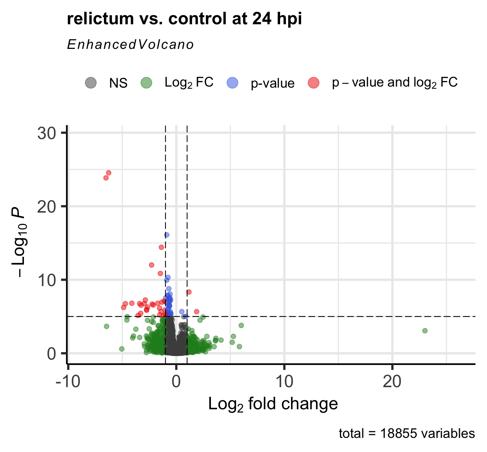
Bonus exercise: Volcano plots
The EnhancedVolcano() function by default adds gene IDs to highly significant genes, but above, we turned off gene name labeling by setting labSize = 0. I did this because the default p-value cut-off for point labeling is 1e-5 and in this case, that would make the plot quite busy with gene labels. We might want to try a plot with a stricter p-value cut-off that does show the gene labels.
- Play around with the p-value cut-off and the labeling to create a plot you like.
Check the vignette, or the help page (accessed by running?EnhancedVolcano) to see how you can do this.
Click for an example
EnhancedVolcano(
toptable = res_rc24,
title = "relictum vs. control at 24 hpi",
x = "log2FoldChange",
y = "padj",
lab = rownames(res_rc24),
labSize = 4, # Now we will show the gene labels
pCutoff = 10e-10, # Modify the p-value cut-off
subtitle = NULL, # I'll also remove the silly subtitle
caption = NULL, # ... and the caption
)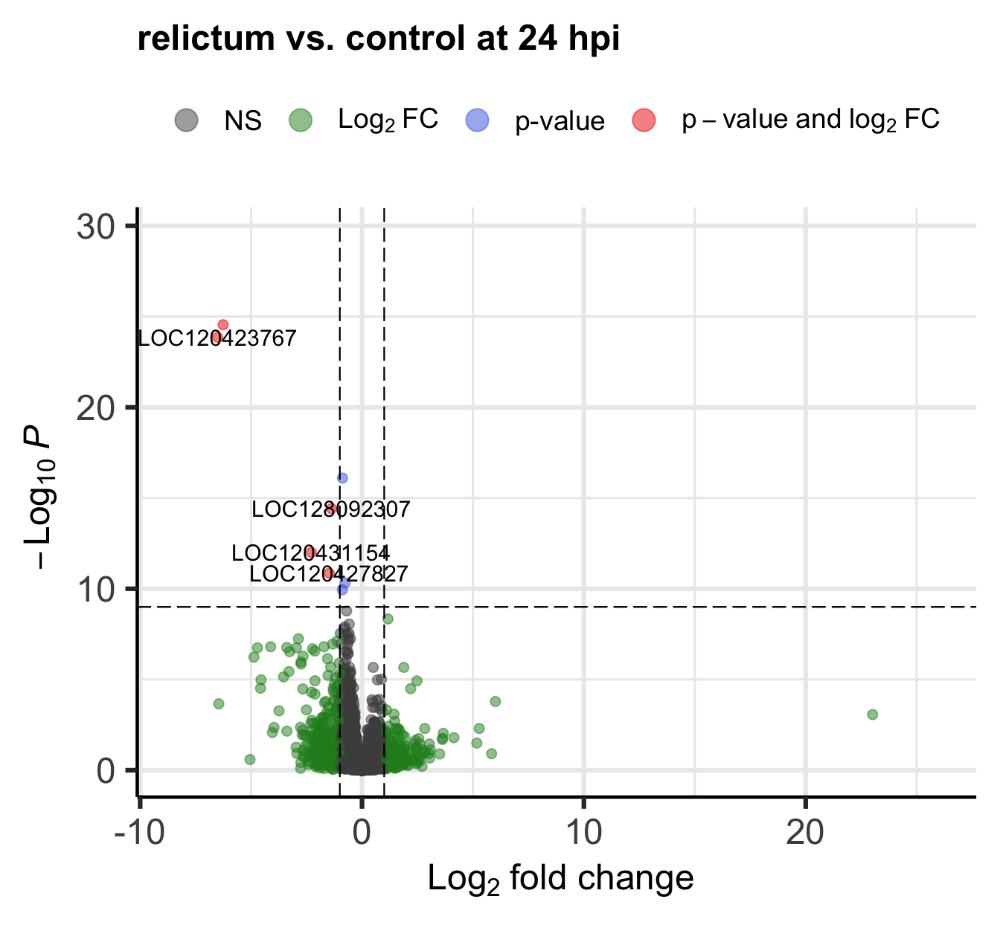
- Figure out the identity of the above-mentioned log2-fold change outlier.
(You can do so either by labeling it in the plot, or by filtering theres_rc24table.)
Click for the solution for how to lab it in the plot
EnhancedVolcano(
toptable = res_rc24,
title = "relictum vs. control at 24 hpi",
x = "log2FoldChange",
y = "padj",
lab = rownames(res_rc24),
labSize = 4,
pCutoff = 0.05, # Modify the p-value cut-off
FCcutoff = 20, # Modify the LFC cut-off
)Warning: Removed 1 row containing missing values or values outside the scale range
(`geom_vline()`).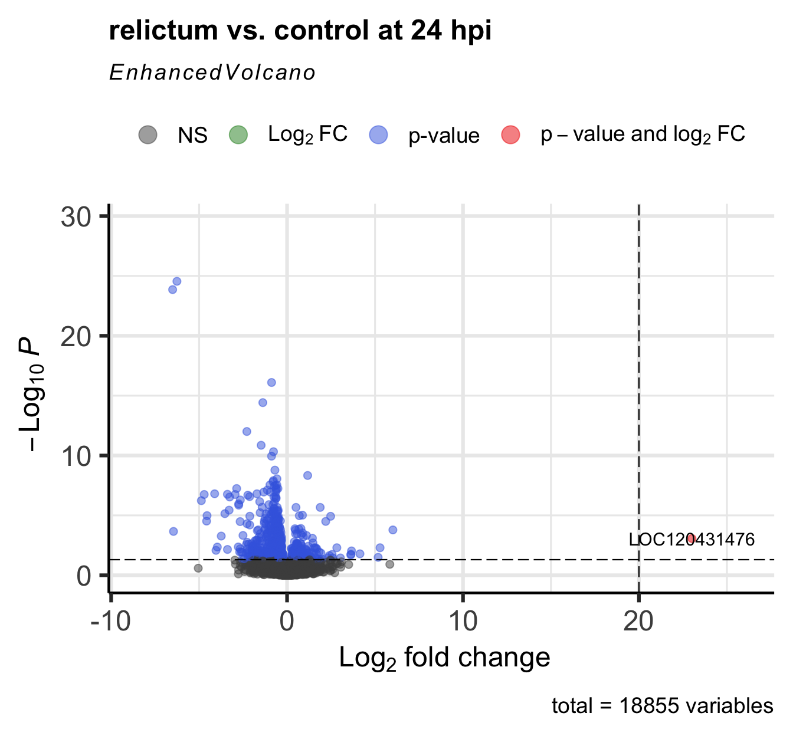
Click for the solution for how to find it in the results table
as.data.frame(res_rc24) |> filter(log2FoldChange > 20) baseMean log2FoldChange lfcSE stat pvalue
LOC120413430 7.540043 24.46898 5.397990 4.532979 NA
LOC120431476 39.720375 23.01445 5.301369 4.341228 1.416886e-05
padj
LOC120413430 NA
LOC120431476 0.0008584398(Interestingly, there’s a second gene with a LFC > 20 that we hadn’t seen in the plot, because it has NA as the pvalue and padj. See the section “Extra info: NA values in the results table” in the Appendix for why p-values can be set to NA.)
6.2 Plot specific genes
We can also create plots of expression levels for individual genes. That is especially interesting for genes with highly significant differential expression. So let’s plot the most highly significant DEG.
First, let’s create a vector with most highly significant DEGs, which we’ll use again for the heatmap below.
top25_DE <- row.names(res_rc24[order(res_rc24$padj)[1:25], ])
top25_DE [1] "LOC120423768" "LOC120423767" "LOC120414587" "LOC128092307" "LOC120431154"
[6] "LOC120427827" "LOC120415152" "LOC120422735" "LOC120431739" "LOC120431733"
[11] "LOC120428214" "LOC120427588" "LOC120415540" "LOC120415522" "LOC120429000"
[16] "LOC120414889" "LOC120413491" "LOC120414802" "LOC120423826" "LOC120429211"
[21] "LOC120425480" "LOC120431003" "LOC120421894" "LOC120423819" "LOC128093166"DESeq2 has a plotting function but the plot is not very good. We will still use that function but just to quickly extract the counts for our gene of interest in the right format for plotting, using returnData = TRUE:
focal_gene_counts <- plotCounts(
dds,
gene = top25_DE[1],
intgroup = c("time", "treatment"),
returnData = TRUE
)
head(focal_gene_counts) count time treatment
ERR10802863 1543.81532 24hpi control
ERR10802864 2279.03704 24hpi cathemerium
ERR10802865 25.42295 24hpi relictum
ERR10802866 1105.75009 24hpi control
ERR10802867 1199.28425 24hpi cathemerium
ERR10802868 32.14394 24hpi relictumNow, we can make the plot:
ggplot(focal_gene_counts,
# Treatment along the x-axis, gene counts along the y, color by treatment:
aes(x = treatment, y = count, fill = treatment)) +
# Plot separate "facets" with the different time points
facet_wrap(vars(time)) +
# Add a boxplot with a partly transparent (alpha) color:
geom_boxplot(alpha = 0.5, outlier.shape = NA) +
# _And_ add individual points:
geom_point(size = 4, shape = 21,
position = position_jitter(w = 0.1, h = 0)) +
# Plot styling (e.g., we don't need a legend)
theme_bw() +
theme(legend.position = "none")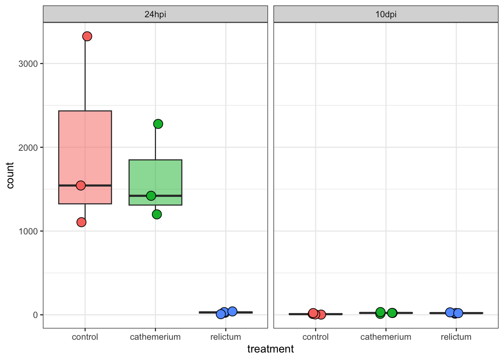
Exercise: Single-gene plots
- Plot one or a few more of the top-DE genes. Do they have similar expression patterns across treatment and time points as the first one?
- Bonus: Plot the gene with the very high LFC value that we saw when making the volcano plot. How would you interpret this?
Click for the solution
focal_gene_counts <- plotCounts(
dds,
gene = "LOC120431476",
intgroup = c("time", "treatment"),
returnData = TRUE
)
ggplot(focal_gene_counts, aes(x = treatment, y = count, fill = treatment)) +
geom_boxplot(alpha = 0.5, outlier.shape = NA) +
geom_point(size = 4, shape = 21, position = position_jitter(w = 0.1, h = 0)) +
facet_wrap(vars(time)) +
theme_bw() +
theme(legend.position = "none")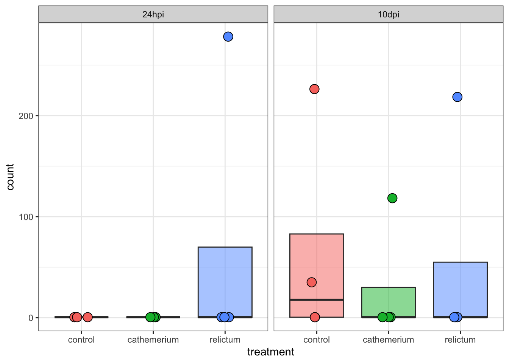
Wow! It looks like in every single time + treatment combinations, all but one (or in one case, two) of the samples have zero expression, but there are several extreme outliers.
Our focal comparison at 24hpi (left panel/facet), and comparing control vs relictum: so it looks like the difference between these two groups is solely due to the one outlier in relictum. Nevertheless, even the multiple-testing corrected p-value (padj) is significant for this gene:
as.data.frame(res_rc24) |>
rownames_to_column("gene") |>
filter(gene == "LOC120431476") gene baseMean log2FoldChange lfcSE stat pvalue
1 LOC120431476 39.72038 23.01445 5.301369 4.341228 1.416886e-05
padj
1 0.0008584398So, we have to be careful with talking our statistical results at face value, and need to visualize important genes!
Outliers!
You may want to check out the solution to the previous exercise, even if you don’t get around to doing it yourself.
7 In Closing
Today, you have performed several steps in the analysis of gene counts that result from a typical RNA-seq workflow. Specifically, you have:
- Created a DESEq2 object from the gene count data and the experiment’s metadata
- Performed exploratory data analysis including a PCA
- Ran a Differential Expression (DE) analysis with DESeq2
- Extracted, interpreted, and visualized the DE results
Next steps
Typical next steps in such an analysis include:
Extracting, comparing, and synthesizing DE results across all pairwise comparisons (this would for example allow us to make the upset plot in Figure 2 of the paper)
Functional enrichment analysis with Gene Ontology (GO) terms, as done in the paper, and/or with KEGG pathways and other functional gene grouping systems.
8 Appendix
8.1 Heatmaps
Rather than plotting expression levels for many individual genes, we can create “heatmap” plots to plot dozens (possibly even hundreds) of genes at once.
We will create heatmaps with the pheatmap function, and let’s make a heatmap for the top-25 most highly significant DEGs for our focal contrast.
Unlike with some of the functions we used before, we unfortunately can’t directly use our DESeq2 object, but we have to extract and subset the count matrix, and also pass the metadata to the heatmap function:
# We need a normalized count matrix, like for the PCA
# We can simply extract the matrix from the normalized dds object we created for the PCA
norm_mat <- assay(dds_vst)
# In the normalized count matrix, select only the genes of interest
# We'll reuse the 'top25_DE' vector that we created for the individual gene plots
norm_mat_sel <- norm_mat[match(top25_DE, rownames(norm_mat)), ]
# Sort the metadata
meta_sort <- meta |>
arrange(treatment, time) |>
select(treatment, time)Now we can create the plot:
pheatmap(
norm_mat_sel,
annotation_col = meta_sort, # Add the metadata
cluster_cols = FALSE, # Don't cluster samples (=columns, cols)
show_rownames = FALSE, # Don't show gene names
scale = "row", # Perform z-scaling for each gene
)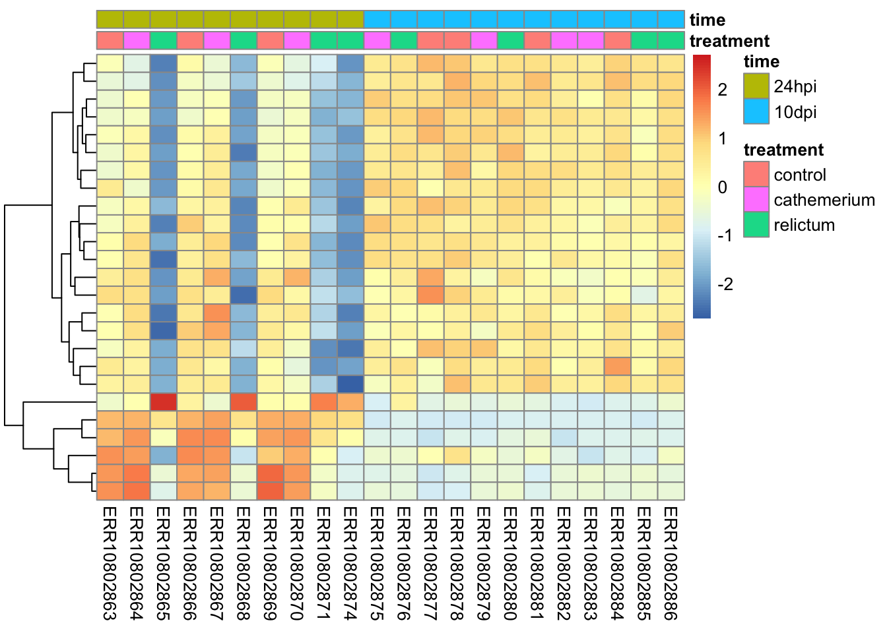
Notes on the code and plot above:
The z-scaling with
scale =will make sure we can compare genes with very different expression levels: after all, we’re interested in relative expression levels across samples/sample groups.pheatmapwill by default perform hierarchical clustering both at the sample (col) and gene (row) level, such that more similar samples and genes will appear closer to each other. Above, we turned clustering off for samples, since we want to keep them in their by-group order.
Bonus exercise: heatmaps
Make a heatmap with the top-25 most-highly expressed genes (i.e., genes with the highest mean expression levels across all samples).
Click for a hint: how to get that top-25
top25_hi <- names(sort(rowMeans(norm_mat), decreasing = TRUE)[1:25])Click for the solution
# In the normalized count matrix, select only the genes of interest
norm_mat_sel <- norm_mat[match(top25_hi, rownames(norm_mat)), ]
# Sort the metadata
meta_sort <- meta |>
arrange(treatment, time) |>
select(treatment, time)
# Create the heatmap
pheatmap(
norm_mat_sel,
annotation_col = meta_sort,
cluster_cols = FALSE,
show_rownames = FALSE,
scale = "row"
)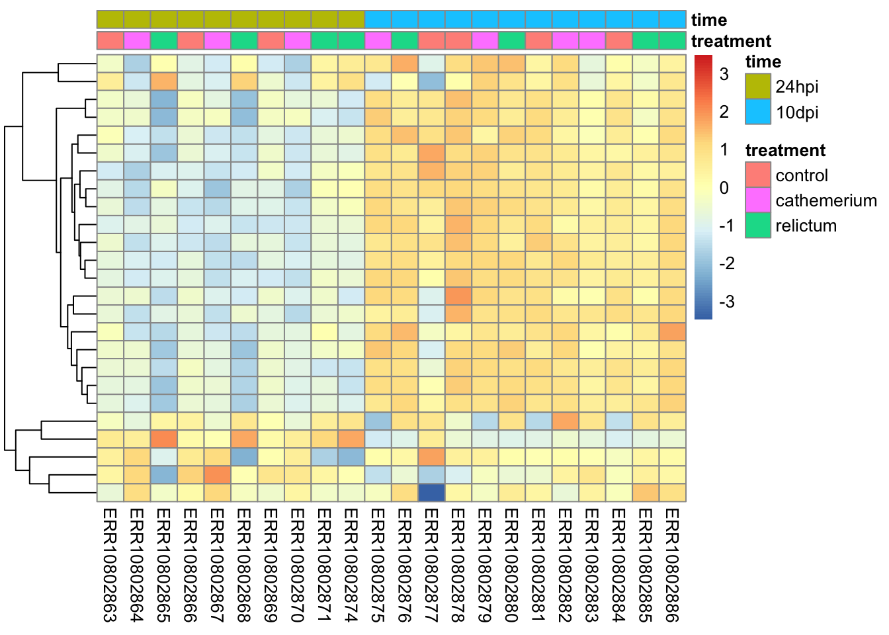
8.2 NA values in the DESeq2 results table
Some values in the DESeq2 results table can be set to NA for one of the following reasons:
If a gene contains a sample with a count outlier, both the p-value and adjusted p-value will be set to
NA. (DESeq2 performs outlier detection using Cook’s distance.)If all samples have zero counts for a given gene, the
baseMeancolumn will be zero, and the log2-fold change estimates, p-value and adjusted p-value will all be set toNA.DESeq2 also automatically filters genes with a low mean count in the sense that it does not include them in the multiple testing correction. Therefore, in such cases, the p-value will not be
NA, but the adjusted p-value will be.Because we have very low power to detect differential expression for such low-count genes, it is beneficial to remove them prior to the multiple testing correction: that way, the correction becomes less severe for the remaining genes.
Let’s see how many genes have NA p-values:
# Number of genes with NA p-value:
sum(is.na(res_rc24$pvalue))[1] 1124# As a proportion of the total number of genes in the test:
sum(is.na(res_rc24$pvalue)) / nrow(res_rc24)[1] 0.05961283And NA adjusted p-values:
# Number of genes with NA p-value:
sum(is.na(res_rc24$padj))[1] 7283# As a proportion of the total number of genes in the test:
sum(is.na(res_rc24$padj)) / nrow(res_rc24)[1] 0.38626368.3 Exporting the results
To save the DE results tables, you can for example use the write_tsv() function. You could open the resulting file in Excel for further exploration.
# Create the output directory, if necessary:
dir.create("results/DE", recursive = TRUE, showWarnings = FALSE)
# Write the
write_tsv(as.data.frame(res_rc24), "results/DE/resultsres_rc24.tsv")Footnotes
An older pipe, which requires loading an R package to work↩︎
The new base R pipe that does not require a package↩︎
And even for more basic tasks, it is common to use packages that are preferred over the functionality that is by default available in R, like in the case of plotting.↩︎
Specifically, the point is to remove the dependence of the variance in expression level on its mean, among genes↩︎
I can’t tell from the paper which method they used↩︎